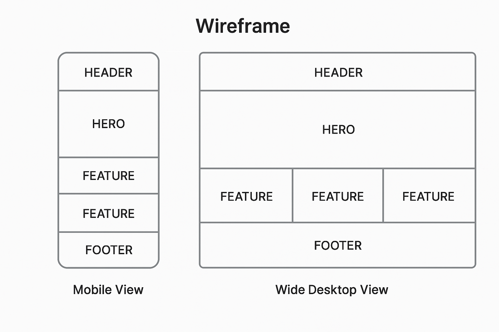

Sensory toys for children with autism
Make Abrazos - This name was chosen because it combines the action of "making" with "hugs," representing both the warmth and functionality of the sensory products we offer for children with autism.
Optional domain: makeabrazos.com
The purpose of the site is to offer a selection of sensory toys focused on the needs of children with autism. In addition, it will provide resources for parents, usage recommendations, and a contact form for purchases or personalized guidance.
Selected fonts:
Mobile view:

Desktop view: